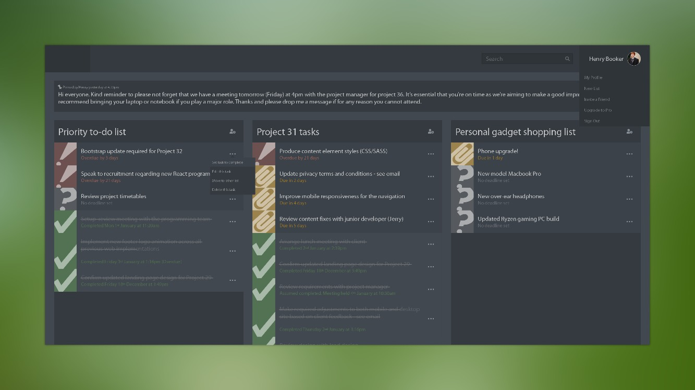

Overview
Hi, I'm Henry Booker, one of those software engineer dudes.
I recently moved to Derby, UK having recently finished my postgraduate education nearby over in Wolverhampton. I'm now turning my attention to new and exciting future challenges, looking to start my career and do something I love.
Oh, and welcome to my personal site. This space basically serves as an interactive portfolio to showcase some of my earlier work and provide some personal background. Be sure to check out my work if you're interested potentially hiring me or just want to stalk me.
As a quick professional overview, I particularly enjoy web application development which is where I tend to feel most at home. I have a personal interest in UI design which enables me to produce both beautiful and accessible applications. That said, I have a fairly varied background for software development. For example, I solely developed multiple unique gaming experiences making use of modern technologies such as virtual reality and AI machine learning algorithms in industry leading game engines. You’ll be able to read a bit more about that stuff over on my about page.
Currently in my spare time I'll be typically be working on personal projects, spending time with my wonderful girlfriend, experimenting with new video encoding technologies, listening to unusual music or extensively "bug testing" the latest video game releases.
Thanks again for visiting and I hope you find everything you're looking for. Please don’t hesitate to contact me for more information should you have any questions. I hope you have a wonderful day!
Recent Projects
Personal tinkering led me down the route of reactive web frameworks and my first stop is Vue.JS. The concept of this project is to provide a suitable environment for task management, specifically aimed at developers.
Extensive design documentation and assets were produced prior to any implementation for this project. The frontend Vue.JS application interacts with a backend Laravel (PHP framework) RESTful API which makes delivers and makes requested changes to user task records. Later I hope to implement further features such as secure personal user accounts and management control functionality.


With the increase in streaming services, I've become more interested in 'cutting the cord' and reducing the number of online streaming I subscribe to. This led me to collect physical media for my favourite titles and make digital copies for personal consumption. Sorting files of this nature can become tedious and current software offerings have limitations, thus producing my own automation tool kit. The code for this project is open-source allowing others to openly enjoy and modify without restriction.
This tool primarily has the task of interacting with various media database API's, analysing input filename paths and video metadata to gain data used for assumptions to produce new (user-configured) filenames and file structures.
During interview stages at Jones & Palmer, I was tasked with completing a code test. In short, I was asked to create a responsive layout website that best matched a provided visual design with no further instruction. This was done swiftly and I met all requirements I was provided with as well as including some bonus features. Instead of taking the estimated 2 weeks, it was completed within a day. See more details via the dedicated demo github page.
Yep, this site. Feel free to check out the source code over on github.
This site acts as a digital CV for potential employers. A responsive template was used to get running quickly, but a fairly large amount of modifications have been made to make it my own. Expect a fresh portfolio sometime in 2020!
Django Media Database Application (not public)
During my studies I was approached by a client with an interest in archiving information with a focus on the film industry. The request was to produce a more visually pleasing experience and offer a wider range of features in comparison to similar potential rival sites such as IMDb and TheMovieDB.
All set out requirements for this projects were achieved. The web app is capable of offering title listing information to users, easily allow for edits of added titles as well as offering community elements such as customisable user accounts. The user experience was a particular area which received heavy focus. The interface follows a minimal look but unfolds to reveal a lot of additional information should a user need it.
'Arena' - Unreal Engine AI Project
Artificial Intelligence was the area of focus for my masters dissertation, an area that's currently fairly important to the computer science scene. I opted to extend my game development skills by focussing on introducing AI concepts into rewards and achievement systems for a video game. The study was largely successful in identifying that the use of intelligent mechanisms in games could be extended beyond current use today in order to provide a more rewarding and individual player experience.
The project in question was a third-person shooter survival game. The continuous survival game challenges players to improve their general skills in accuracy, simultaneous headshots and speed. Challenges are intelligently adapted to each individual player making prior gaming experience less of a factor. The newly suggested challenge and achievement system was tested against the currently used linear approach in games today which was also included in the project.
Recommended for a job assisting the Romanian-based bearing distribution company 'WBW Romexim Direct', I was tasked with the introduction of their online presence. The request was to produce a fairly bare-bones informative website that looked similar to competitors. The client self-hosted and the site has since been slightly modified.
Following an agile approach to development, I worked closely with the client to make changes as required. Whilst the design was not my preference, the client selected the design of their choosing from a large variety of design options I suggested. Special requests were made such displaying information from existing Excel tables onto page as well as the inclusion of custom proof-read translations for both English and Romanian languages. Existing company logos were re-created to improve presentation and the site was built without any template libraries as per the clients wishes.
'Deep' - Unreal Engine VR Project
Further developing my personal skills in game development led me to experiment with emerging Virtual Reality (VR) technologies, working closely an industry leading game engine; Unreal Engine 4 and at the time brand new Oculus Rift VR headsets.
As a university project for my bachelor's degree I focused my research on the immersive opportunities that such VR technologies could offer the gaming industry and achieved this by developing a horror genre video game. The game throws the player in the middle of a manhunt event, desperate to find a missing child which leads you into an unknown abandon mine. This game was tested via focus group and surveying means, receiving mostly positive and constructive feedback.
Various JavaScript Projects
During my studies we experimented with the use of JavaScript in a number of places. AI was introduced to me in the form of JavaScript, where we would produce a script that could determine the best route for a character to take through a randomly generated map full of hazards and special rules.
HTML5 canvases was also a point of interest. Further experimentation is JavaScript led us to create image and sound editing applications without the use of any existing libraries, allowing for realtime modifications and visualisations among other things. Another noteworthy one was producing short 3D browser games using three.js, projects I was particularly fond of during my bachelors.
JavaScript was where I was introduced to Artificial Intelligence (AI) concepts. During my degree we were tasked with creating an AI capable of completing levels in a 2D board game. Map placements were randomly generated and the player has both objectives and hazards to deal with. I produced a viable solution for this task and then went a step further with time remaining to increase efficiency and reduce steps required for the AI to complete levels.

'DUO' - Unreal Engine Platform Game
Games today seem to focus more on single player-only experiences preferring online multiplayer for communication. DUO was an attempt at returning to a single-screen multiplayer. DUO challenged one or two players in a puzzle genre experience allowing multiple controller input for each player character. Levels were crafted to require consideration, teamwork and communication in order to succeed.
This game was a combined project between myself and friend during our studies. The game was built using UE4 with a minimalistic theme at heart. It hosted multiple levels, included custom sound effects and background music as well as including sophisticated interfaces found in games today.
Mobile Database Application (Android)
This project introduced me to mobile application development working with the android ecosystem. The concept was simple, produce a mobile application with local read and write database capabilities. A typical blog was the theme for this android app and later on more advanced functionality was included such as interacting with external databases and the introduction of various presentation styles for the blog posts. Overall this was an interesting experience and an area I'd like to revisit again in the future.
Intro
Thanks for checking me out. Here you can expect a slightly more detailed view of my skill set and educational background. If you'd like more information, feel free to contact me.
Education
- MSc Computer Science – University of Wolverhampton
- BSc Computer Science (Hons) (Games Development) – University of Wolverhampton – 1st Class
- Pearson BTEC Level 5 HND in Computing and Systems Development (QCF) – Boston College – Distinction
- Pearson BTEC Level 4 HNC in Computing and Systems Development – Boston College – Distinction
- IT Extended Diploma Level 3 – Boston College – Merit
What I do
I have quite a varied range of skills that can be applied in a magnitude of ways and allow for constant adaptability. Usually I lean toward web application development but also have interests in a number other programming areas such as mobile application and game development.
I have experience with:
Languages
- Python
- C++
- JavaScript
- PHP
- HTML5
- CSS3
- SASS (learning)
Frameworks
- Django
- Bootstrap
- CodeIgniter
- Angular
- Vue.js (learning)
- Laravel (learning)
Misc
- MySQL
- MongoDB
- jQuery
- three.js
- Git
What else?
On top of the above mentioned skills, I dabble in a handful other areas. Such include:
- Unreal Engine 4 Game Dev
- CryEngine 3 Game Dev
- 2D Graphic Design (UI's & logos, etc)
- Automating/Scripting Work flows
- Mobile Application Development (AndroidStudio)
- Machine Learning Algorithms
- Video Encoding/Compression
- 3D Modelling (Autodesk 3DS Max)
Not ticking all boxes?
I'm pretty adaptable you know! Even if I'm not meeting that quota I am a bit of a try-hard and will always strive to be prepared for any job I commit to. Feel free to contact me about any specific requirements - I don't bite!
Work Experience
- Junior Developer - Jones & Palmer
A short lived position I held working for a Birmingham based printing & corporate digital portfolio company. This was a great opportunity and in my short stay I learnt a lot. With my girlfriend wishing to relocate to continue her studies and the commute no longer being achievable, the decision was made to move on. My duties at Jones & Palmer included writing mobile-first responsive websites for multiple corporate websites, working both solo and as part of a team, getting involved with different departments and team meetings and managing my time effectively.
- Web Application Configuration/Development – Acuity Security
A client approached me with the request of producing a completely custom website system for matching potential security employees with employers. Whilst the original concept was achievable it would have taken time to do and funding was an issue for the client. Instead a more affordable alternative was suggested. An existing forum platform was licensed and tailored for the intended purpose, allowing the administrator to charge a small commission fee for the service when a match was made. Unfortunately this start-up business didn’t exactly take off as the client intended. That said, it did allow me to sharpen my skills dealing with general web hosting and gain more hands on experience setting up unknown web software.
- Freelance Website Developer – WBW Romexim Direct Bearings
A Romanian company dealing with the trade and distribution of bearings and other industry automotive products. The company was yet to have an online presence and I was instructed to design and develop a site that matched similar competitors. My client required a platform to display their products along with available stock from existing databases. Translation was also of great importance for Romanian to English languages and meant I dealt with additional external personnel for this project. Extensive communication with various involved parties allowed for the project to be a success, meeting all client expectations.
- Site Warden – Boston College
While not computing related, I was recognised as a responsible student during my higher education studies and was offered a staff position as site-warden for the Boston College Halls of Residence. During this time I was responsible for the wellbeing of around 50 students outside of office hours and was able to solve many arising problems often working alongside the security team. This was basically a managerial position where I became used to decision making and following disciplinary procedures when dealing with rebellious students. During my employment for this role I also underwent fire safety & first aid courses.
- Warehouse Employee – Molan UK
During my college years, I found myself with free time and not a lot to do. This led me to take a job working as a general factory employee, teaching me patience if nothing else. I had a handful of duties, primarily centred around transport loading, cleaning equipment and assisting with production.
- Older Noteworthy Positions
- Freelance Website Developer – East Lincs Seafood - Clearing up previous developer HTML layout issues
- Sports Direct - General sales department employee
- 2D Logo Design – Boston Railway Club,
- Assisting IT Technician - Staniland Academy - Two month work experience placement
- Stand Setup & Sales Employee - Boston Market
Like what you see?
Right now I am seeking full time employment. If you think I'd be a great fit for your company or perhaps have a project in mind I can help with, I'd be excited to hear from you.
Contact
Ready to talk? Awesome! I'm excited to hear from you!
My personal preference is contact via email:
I'm also reachable via LinkedIn or you can check out my CV where you'll find a phone number if you're in a rush.
Hope to hear from you soon!